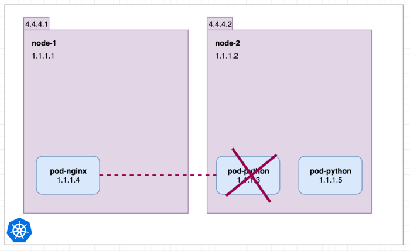
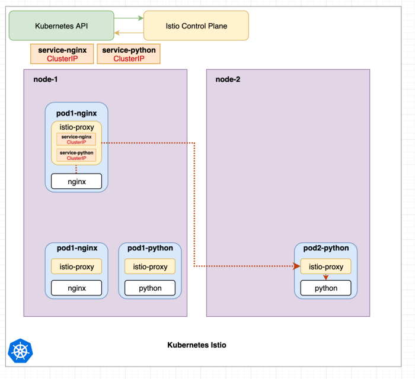

release time :2022-09-02 13:12
This article briefly introduces Kubernetes internal Service, Kubernetes Ingress, and Kubernetes Istio in order.
Kubernetes Internal Service
ClusterIP, NodePort, ExternalIPs and LoadBalancer services are provided by kube-proxy or CNI such as Cilium, Calico.
If you create a NodePort service, it also creates a ClusterIP service. If you create a LoadBalancer, it creates a NodePort and then a ClusterIP.
Why there is a Kubernetes internal Service:

In the situation above, if pod-python is destroyed and a new one is created. (In this article, we do not discuss how to manage and control pods.) Suddenly pod-nginx can no longer reach 1.1.1.3. With Service or Cluster IP, the situation is different.

Now the service can only be accessed internally by the cluster. In order to be accessible externally, NodePort can be configured. This way the internal service python is now also accessible from each node's internal and external IP addresses on port 30080.

Kubernetes Ingress Kubernetes Ingress is not a Kubernetes service. It's an Nginx Pod that redirects requests to other internal (ClusterIP) services.
Ingress-nginx composition:
- ingress-nginx-controller: According to the ingress rules written by the user (the created ingress yaml file), dynamically change the configuration file of the nginx service, and reload to make it effective (automated, realized by lua script);
- Ingress resource object: abstract the configuration of Nginx into an Ingress object. Every time you add a new Service resource object, you only need to write a new yaml file of the Ingress rule (or modify the yaml file of the existing ingress rule)
What Kubernetes Ingress can do:
It is somewhat similar to the work of Kubernetes Service. Like the traditional Nginx work content, the HTTP protocol receives requests for specific file paths and redirects HTTP protocol requests and returns their responses. Realize dynamic configuration services and reduce unnecessary port mapping.
For example, you can configure different URLs /folder /other to be forwarded to different Kubernetes Services.
apiVersion: networking.k8s.io/v1beta1
kind: Ingress
metadata:
annotations:
kubernetes.io/ingress.class: nginx
namespace: default
name: test-ingress
spec:
rules:
- http:
paths:
- path: /folder
backend:
serviceName: service-nginx
servicePort: 3001
- http:
paths:
- path: /other
backend:
serviceName: service-python
servicePort: 3002

That's Kubernetes
Istio is a service mesh that allows for more detailed, sophisticated, and observable communication between pods and services in a cluster. It injects proxy containers into all pods and then controls traffic in the cluster.
Services in Kubernetes are implemented by kube-proxy components running on each node. This component creates iptables rules that redirect requests to pods. Therefore, services are nothing more than iptables rules.

The image above shows Istio installed, which ships with the Istio control plane. It is also common that each pod has a second container called istio-proxy that is automatically injected into the pod during creation. Pods with istio-proxy will no longer use these kube-proxy components.
istio-proxy The Istio control plane configures all sidecars whenever configuration or serviced pods change. Similar to the Kubernetes API to configure kube-proxy. The Istio control plane implements its own routing using pod ip. Istio will translate Kubernetes service declarations into its own route declarations.
Next, let's see how to use Istio to make a request:

In the image above, all istio-proxy containers have been configured by the Istio control plane and contain all necessary routing information. The nginx container from pod1-nginx makes a request to service service-python.
The request is intercepted by the istio-proxy container pod1-nginx and redirected to the istio-proxy container of a python pod, which then redirects it to the python container.
It can be seen that Istio and Kubernetes internal Service and Kubernetes internal Service have many overlapping functions, or they can be multiple implementations of the same requirements. What are the advantages of Istio over Kubernetes Service and Kubernetes Ingress?
All traffic is routed through the istio-proxy containers in each pod. Whenever istio-proxy receives and redirects a request, it also submits information about it to the Istio control plane. So the Istio control plane knows exactly which pod the request is coming from, what HTTP headers are present, how long it takes from one request to istio-proxy to another, etc. In a cluster with many services communicating with each other, this improves observability and better control over all traffic.
The specific advantages are:
- Advanced Routing: Kubernetes internal services can only round-robin or randomly distribute service requests to Pods. A more sophisticated approach can be * implemented using Istio. Like redirecting based on request headers if an error occurs or using minimal services.
- Deployment: It allows routing certain percentages of traffic to certain service versions, thus allowing green/blue and canary deployments.
- Encryption: Intra-cluster traffic between pods from istio-proxy to istio-proxy can be encrypted.
- Monitoring/Graph Generation: Istio connects to monitoring tools like Prometheus. It also works nicely with Kiali to display all services and their traffic.
- Tracing: Since the Istio control plane has a lot of data about requests, this data can be traced and inspected using tools such as Jaeger.
- Multi-cluster mesh: Istio has an internal service registry that can consume existing Kubernetes services. It is also possible to add resources from outside the cluster, and even connect different clusters into a grid.
Summarize
To sum up, ingress is the request entry of k8s cluster, which can be understood as the re-abstraction of multiple services. Generally speaking, ingress generally consists of two parts: ingress resource object and ingress-controller. Istio does not replace Kubernetes internal services, Istio uses existing Kubernetes internal services to obtain all its endpoints/pod IP addresses. Istio can replace Kubernetes Ingress. Istio provides new resources, such as Gateway and VirtualService, and even comes with an ingress converter istioctl convert-ingress.
Attachment: ingress-nginx deploy&test
# 创建集群
[root@centos7 ~]# kind create cluster
Creating cluster "kind" ...
✓ Ensuring node image (kindest/node:v1.24.0) üñº
✓ Preparing nodes üì¶
✓ Writing configuration üìú
✓ Starting control-plane üïπÔ∏è
✓ Installing CNI üîå
✓ Installing StorageClass üíæ
Set kubectl context to "kind-kind"
You can now use your cluster with:
kubectl cluster-info --context kind-kind
Thanks for using kind! üòä
# 检查集群状态
[root@centos7 ~]# kubectl get node -o wide
NAME STATUS ROLES AGE VERSION INTERNAL-IP EXTERNAL-IP OS-IMAGE KERNEL-VERSION CONTAINER-RUNTIME
kind-control-plane Ready control-plane 32s v1.24.0 172.18.0.2 <none> Ubuntu 21.10 5.19.5-1.el7.elrepo.x86_64 containerd://1.6.4
[root@centos7 ~]# kubectl get po -A -o wide
NAMESPACE NAME READY STATUS RESTARTS AGE IP NODE NOMINATED NODE READINESS GATES
kube-system coredns-6d4b75cb6d-4ck55 1/1 Running 0 19s 10.244.0.3 kind-control-plane <none> <none>
kube-system coredns-6d4b75cb6d-ps5sf 1/1 Running 0 19s 10.244.0.2 kind-control-plane <none> <none>
kube-system etcd-kind-control-plane 1/1 Running 0 34s 172.18.0.2 kind-control-plane <none> <none>
kube-system kindnet-fbjj6 1/1 Running 0 19s 172.18.0.2 kind-control-plane <none> <none>
kube-system kube-apiserver-kind-control-plane 1/1 Running 0 34s 172.18.0.2 kind-control-plane <none> <none>
kube-system kube-controller-manager-kind-control-plane 1/1 Running 0 34s 172.18.0.2 kind-control-plane <none> <none>
kube-system kube-proxy-rz9vk 1/1 Running 0 19s 172.18.0.2 kind-control-plane <none> <none>
kube-system kube-scheduler-kind-control-plane 1/1 Running 0 34s 172.18.0.2 kind-control-plane <none> <none>
local-path-storage local-path-provisioner-9cd9bd544-xddpx 1/1 Running 0 19s 10.244.0.4 kind-control-plane <none> <none>
# 部署 ingress-nginx
[root@centos7 ~]# kubectl apply -f https://raw.githubusercontent.com/kubernetes/ingress-nginx/controller-v1.3.0/deploy/static/provider/cloud/deploy.yaml
namespace/ingress-nginx created
serviceaccount/ingress-nginx created
serviceaccount/ingress-nginx-admission created
role.rbac.authorization.k8s.io/ingress-nginx created
role.rbac.authorization.k8s.io/ingress-nginx-admission created
clusterrole.rbac.authorization.k8s.io/ingress-nginx created
clusterrole.rbac.authorization.k8s.io/ingress-nginx-admission created
rolebinding.rbac.authorization.k8s.io/ingress-nginx created
rolebinding.rbac.authorization.k8s.io/ingress-nginx-admission created
clusterrolebinding.rbac.authorization.k8s.io/ingress-nginx created
clusterrolebinding.rbac.authorization.k8s.io/ingress-nginx-admission created
configmap/ingress-nginx-controller created
service/ingress-nginx-controller created
service/ingress-nginx-controller-admission created
deployment.apps/ingress-nginx-controller created
job.batch/ingress-nginx-admission-create created
job.batch/ingress-nginx-admission-patch created
ingressclass.networking.k8s.io/nginx created
validatingwebhookconfiguration.admissionregistration.k8s.io/ingress-nginx-admission created
# 检查 ingress-nginx 状态
[root@centos7 ~]# kubectl get po -A -o wide
NAMESPACE NAME READY STATUS RESTARTS AGE IP NODE NOMINATED NODE READINESS GATES
ingress-nginx ingress-nginx-admission-create-ddgdc 0/1 Completed 0 59s 10.244.0.5 kind-control-plane <none> <none>
ingress-nginx ingress-nginx-admission-patch-6tfbk 0/1 Completed 0 59s 10.244.0.6 kind-control-plane <none> <none>
ingress-nginx ingress-nginx-controller-6bf7bc7f94-k94c4 1/1 Running 0 59s 10.244.0.7 kind-control-plane <none> <none>
kube-system coredns-6d4b75cb6d-4ck55 1/1 Running 0 2m55s 10.244.0.3 kind-control-plane <none> <none>
kube-system coredns-6d4b75cb6d-ps5sf 1/1 Running 0 2m55s 10.244.0.2 kind-control-plane <none> <none>
kube-system etcd-kind-control-plane 1/1 Running 0 3m10s 172.18.0.2 kind-control-plane <none> <none>
kube-system kindnet-fbjj6 1/1 Running 0 2m55s 172.18.0.2 kind-control-plane <none> <none>
kube-system kube-apiserver-kind-control-plane 1/1 Running 0 3m10s 172.18.0.2 kind-control-plane <none> <none>
kube-system kube-controller-manager-kind-control-plane 1/1 Running 0 3m10s 172.18.0.2 kind-control-plane <none> <none>
kube-system kube-proxy-rz9vk 1/1 Running 0 2m55s 172.18.0.2 kind-control-plane <none> <none>
kube-system kube-scheduler-kind-control-plane 1/1 Running 0 3m10s 172.18.0.2 kind-control-plane <none> <none>
local-path-storage local-path-provisioner-9cd9bd544-xddpx 1/1 Running 0 2m55s 10.244.0.4 kind-control-plane <none> <none>
[root@centos7 ~]# kubectl get pods --namespace=ingress-nginx
NAME READY STATUS RESTARTS AGE
ingress-nginx-admission-create-ddgdc 0/1 Completed 0 73s
ingress-nginx-admission-patch-6tfbk 0/1 Completed 0 73s
ingress-nginx-controller-6bf7bc7f94-k94c4 1/1 Running 0 73s
# 测试 ingress-nginx
[root@centos7 ~]# kubectl create deployment demo --image=httpd --port=80
deployment.apps/demo created
[root@centos7 ~]# kubectl expose deployment demo
service/demo exposed
[root@centos7 ~]# kubectl get svc -A
NAMESPACE NAME TYPE CLUSTER-IP EXTERNAL-IP PORT(S) AGE
default demo ClusterIP 10.96.179.60 <none> 80/TCP 56s
default kubernetes ClusterIP 10.96.0.1 <none> 443/TCP 4m40s
ingress-nginx ingress-nginx-controller LoadBalancer 10.96.170.222 <pending> 80:32137/TCP,443:30208/TCP 2m27s
ingress-nginx ingress-nginx-controller-admission ClusterIP 10.96.139.192 <none> 443/TCP 2m27s
kube-system kube-dns ClusterIP 10.96.0.10 <none> 53/UDP,53/TCP,9153/TCP 4m38s
[root@centos7 ~]# kubectl get po
NAME READY STATUS RESTARTS AGE
demo-6486d57d96-j65cf 1/1 Running 0 94s
[root@centos7 ~]# kubectl create ingress demo-localhost --class=nginx \
> --rule="demo.localdev.me/*=demo:80"
ingress.networking.k8s.io/demo-localhost created
[root@centos7 ~]# kubectl get ingress -A
NAMESPACE NAME CLASS HOSTS ADDRESS PORTS AGE
default demo-localhost nginx demo.localdev.me 80 8s
[root@centos7 ~]# kubectl port-forward --namespace=ingress-nginx service/ingress-nginx-controller 8080:80
Forwarding from 127.0.0.1:8080 -> 80
Forwarding from [::1]:8080 -> 80
[root@centos7 ~]# curl http://demo.localdev.me:8080/
<html><body><h1>It works!</h1></body></html>